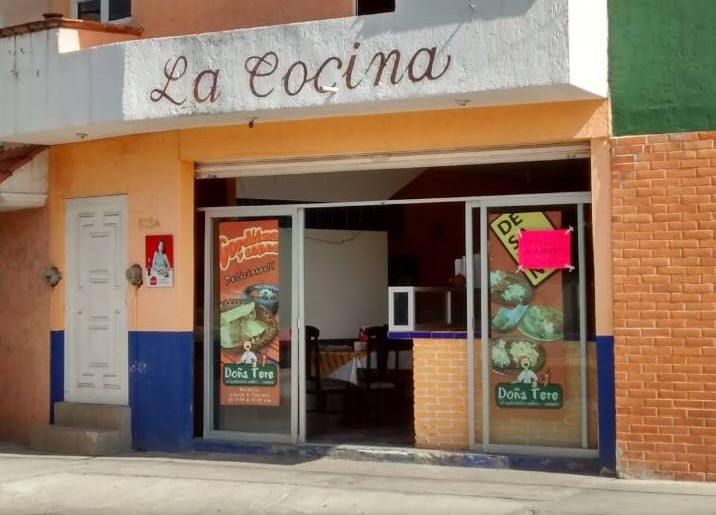

|  |
HistoriaLa Cocina Económica Doña Tere comenzó en 2015 como un pequeño negocio con el objetivo de generar un ingreso. |
UbicaciónVisítanos en Av. Coral 528, San Patricio, 78399 San Luis Potosí, S.L.P., donde con gusto te atenderemos y podrás disfrutar de nuestros platillos caseros y deliciosos.Estamos en una zona de fácil acceso, y siempre nos aseguramos de brindarte un servicio cálido y de calidad. ¡Te esperamos! |
|
¿Quieres aprender a hacer un arroz delicioso?A continuación encontrarás un pequeño video con una receta sencilla y práctica para preparar arroz perfecto. Ideal para acompañar tus platillos caseros. ¡Anímate a intentarlo! |
|